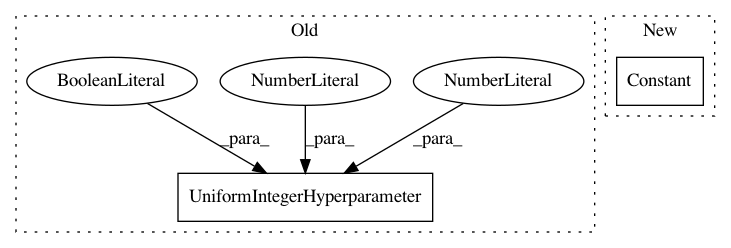

c94e251303067f2bf0ed647108a8f70b58d1006a,AutoSklearn/components/classification/gradient_boosting.py,GradientBoostingClassifier,get_hyperparameter_search_space,#,115
Before Change
// Copied from random_forest.py
n_estimators = UniformIntegerHyperparameter(
name="n_estimators", lower=10, upper=100, default=10, log=False)
//max_features = UniformFloatHyperparameter(
// name="max_features", lower=0.01, upper=0.5, default=0.1)
max_features = UniformFloatHyperparameter(
"max_features", 0.5, 5, default=1)
After Change
// Copied from random_forest.py
//n_estimators = UniformIntegerHyperparameter(
// name="n_estimators", lower=10, upper=100, default=10, log=False)
n_estimators = Constant("n_estimators", 100)
//max_features = UniformFloatHyperparameter(
// name="max_features", lower=0.01, upper=0.5, default=0.1)
max_features = UniformFloatHyperparameter(
"max_features", 0.5, 5, default=1)
In pattern: SUPERPATTERN
Frequency: 3
Non-data size: 2
Instances
Project Name: automl/auto-sklearn
Commit Name: c94e251303067f2bf0ed647108a8f70b58d1006a
Time: 2015-01-11
Author: feurerm@informatik.uni-freiburg.de
File Name: AutoSklearn/components/classification/gradient_boosting.py
Class Name: GradientBoostingClassifier
Method Name: get_hyperparameter_search_space
Project Name: automl/auto-sklearn
Commit Name: 84ac1e439158fed286a8b6ef8de3ae8826575f85
Time: 2019-08-05
Author: guilherme.miotto@gmail.com
File Name: autosklearn/pipeline/components/regression/gradient_boosting.py
Class Name: GradientBoosting
Method Name: get_hyperparameter_search_space
Project Name: automl/auto-sklearn
Commit Name: c94e251303067f2bf0ed647108a8f70b58d1006a
Time: 2015-01-11
Author: feurerm@informatik.uni-freiburg.de
File Name: AutoSklearn/components/regression/random_forest.py
Class Name: RandomForest
Method Name: get_hyperparameter_search_space